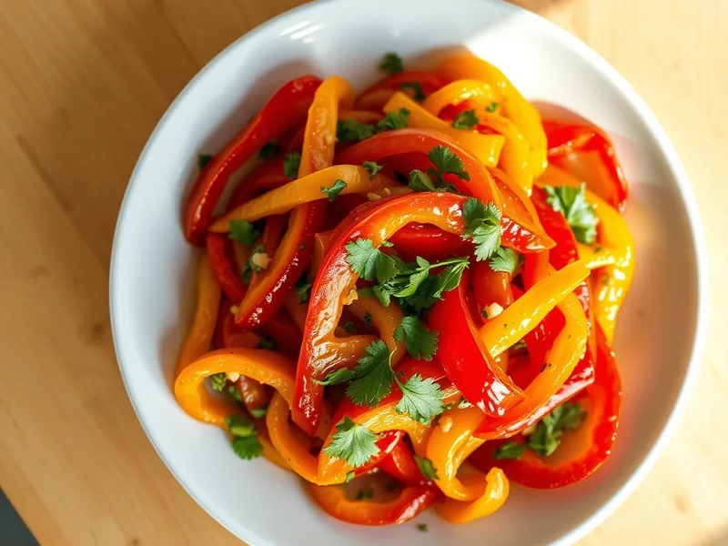

Салат из печёных перцев с чесноком и кинзой
Запечённый до мягкости сладкий перец без кожицы в заправке с чесноком, кинзой и уксусом
60 мин4 порц.161 ккал на порциюБ 3 · Ж 10 · У 15Кавказская кухня
Открыть в приложении: порции, таймеры, список покупок
Продукты на 4 порц.
- Перец болгарский6 шт
- Чеснок3 зуб.
- Кинза20 г
- Петрушка по желаниюпо вкусу
- Растительное масло3 ст. л.
- Уксус 9%1 ст. л.
- Сахар1 ч. л.
- Соль0,7 ч. л.
Как готовить
- Выложите целые перцы на противень и запекайте при 200 °C (сильный жар) 25-30 минут, переворачивая один раз, пока кожица не почернеет местами и не вздуется.
- Сразу переложите перцы в миску, накройте крышкой или пакетом на 10 минут: так кожица легко отойдёт.
- Снимите с перцев кожицу, удалите хвостики и семена, мякоть порвите руками на полоски. Сок из перцев сохраните.
- Смешайте масло, уксус, сахар, соль, выдавленный чеснок и 2-3 ст. л. перечного сока.
- Залейте перцы заправкой, добавьте рубленую зелень, перемешайте и дайте постоять 20 минут перед подачей.
Совет. Берите перцы с толстыми стенками, красные и жёлтые: они слаще. В холодильнике салат хранится 3 дня и подходит к мясу с мангала.